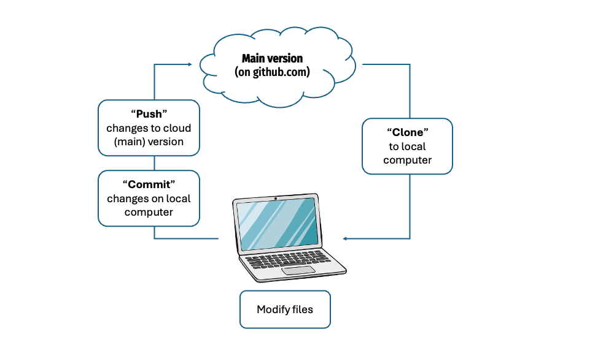
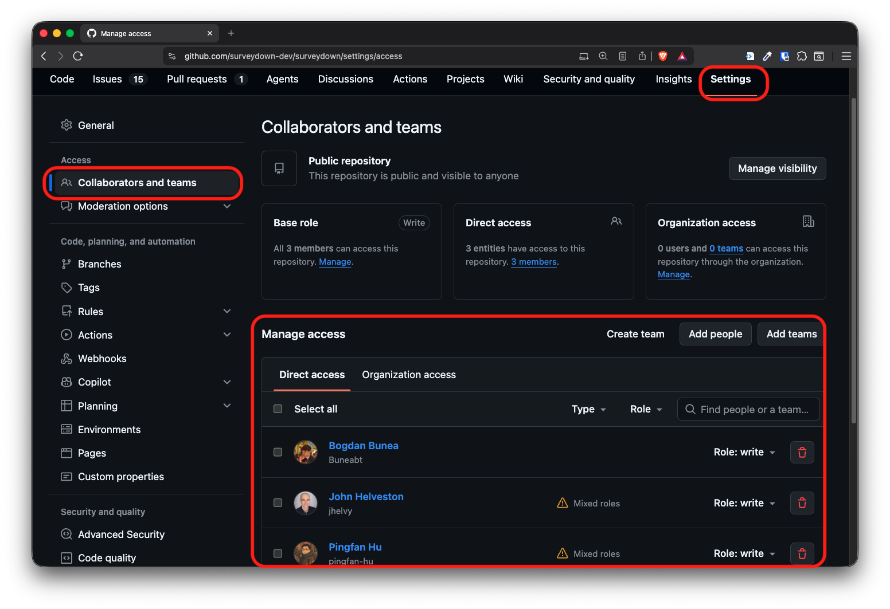
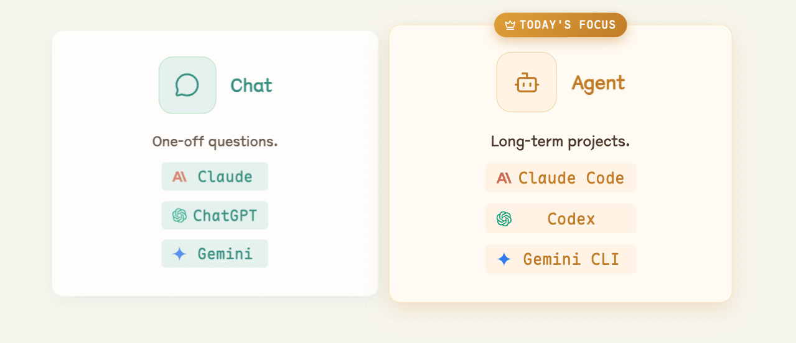
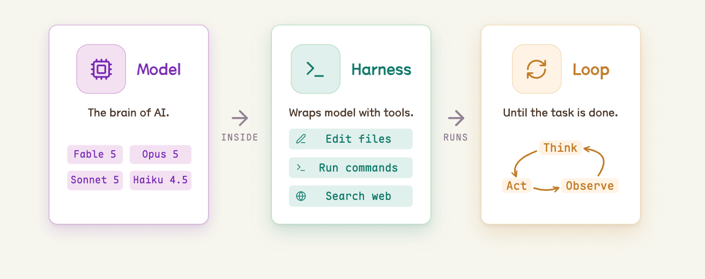
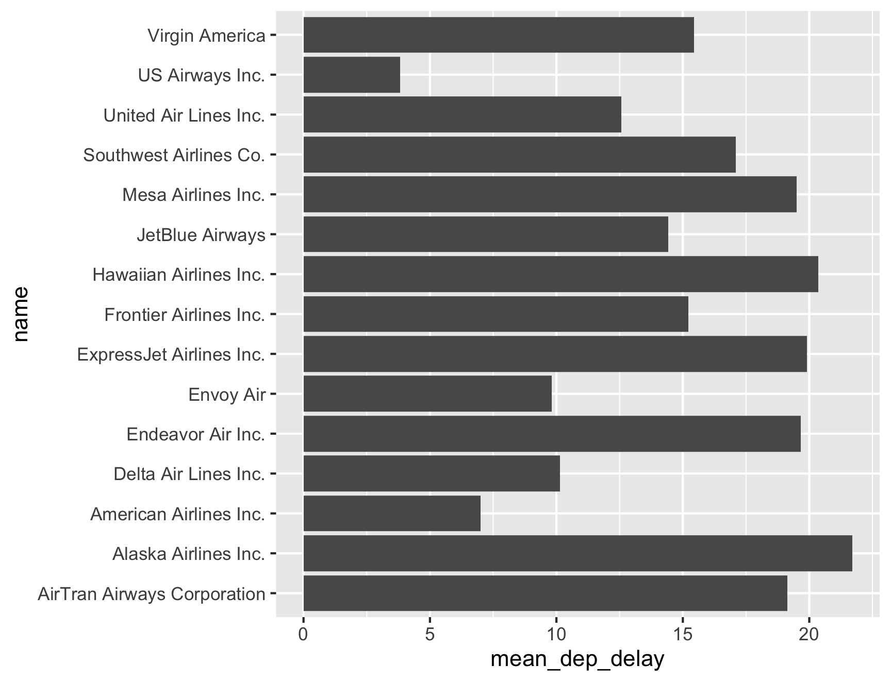

10:00
Agentic Workflows & GitHub
EMSE 6035: Marketing Analytics for Design Decisions
John Paul Helveston
September 2, 2026
Week 2: Agentic Workflows & GitHub
1. Version Control with GitHub
2. Setting Up & Using Claude Code
3. Modes & Slash Commands
4. Skills
5. Working Safely
Week 2: Agentic Workflows & GitHub
1. Version Control with GitHub
2. Setting Up & Using Claude Code
3. Modes & Slash Commands
4. Skills
5. Working Safely

VCS = Version Control System
Original domain: software development
Git = The most popular VCS
Our domain: data analysis & agentic workflows
We collaborate using git on github.com

We won’t use git in a terminal
(you can if you want to)

Everything is a button in GitHub Desktop

The github workflow

Git vocabulary you should know
“repo”
A project folder that
tracks its own history
Example: course website: https://github.com/emse-madd-gwu/2026-Fall
“commit”
A labeled save point — “this is a state worth remembering”
“push” / “pull”
Send / recieve your commits up to GitHub
(the cloud copy)
The GitHub Desktop loop
Changes (locally on your computer) → Commit (with a message) → Push
Write commit messages you’d thank yourself for
Useless
stuffupdateasdffixed it
Useful
Add flights bar chartFix airline join dropping NAsClean column names in import
A message is a note to future you
Not everything belongs in a repo
A .gitignore file lists what git should pretend it can’t see.
Keep out
- Rendered output (
_site/,*_files/) .DS_Store,.Rhistory- Anything with a password or key
- Huge or private data files
Commit
- Your source:
.qmd,.R - Small data files
README.md,CLAUDE.md.gitignoreitself
Ignored files still live on your computer — they just never get pushed.
Checkpoint
You already ran the solo loop in HW1 — let’s make sure it stuck.
- In GitHub Desktop, confirm your
madd-practicerepo is there - Open it on GitHub.com — can you see your commit in History?
- Thumbs up once you can see your pushed change online
Missing it, or joined the class late?
Flag me now — grab the steps from HW1 or this 2-min walkthrough
How do I collaborate with others?
Add collaborators in repo settings

Two new ideas
“clone”
Make your own local copy
of someone else’s repo
“collaborator”
Someone they’ve given write access
so your pushes land in their repo
Add each other as collaborators and you both work on the same main.
The same loop, now with two people
Pull → Changes → Commit → Push
One new step at the front: pull before you start.
When you both edit the same file
Different files, or different parts of a file → git merges them for you.
Same lines, both changed → git stops and asks which one do you want?
That’s a merge conflict, and you fix it by editing the file.
Pull often. Commit small. Tell each other what you’re working on.
One more thing: branches
A branch is a sandbox copy of main. You work there, then open a pull request to merge it back. Big teams live this way. We’ll stay on main all semester — but this is the picture you’ll see everywhere.

Your turn
Team up and both commit to the same repo
- Pair with a neighbor. In your
madd-practicerepo on GitHub.com:
Settings › Collaborators → add your partner’s GH username → they accept the emailed invite - Swap repo links. In GitHub Desktop, File › Clone Repository → clone your partner’s repo
- Edit their
README.mdin Positron → Commit tomain→ Push - Back in your own repo, click Fetch origin, then Pull — your partner’s edit shows up in your files
- Check History in GitHub Desktop: you should see both names on the commit list
Week 2: Agentic Workflows & GitHub
1. Version Control with GitHub
2. Setting Up & Using Claude Code
3. Modes & Slash Commands
4. Skills
5. Working Safely
Assistants vs. Agents
This class lives on the agent side.

Agentic Workflow
Claude Code is the agent. You supply the project and the direction.

An agent can do almost anything with files
Write code
Debug & refactor
Analyze data
Generate images
Summarize docs
Write & edit prose
Automate tasks
Build HTML
Claude Code is an agent (a particular “harness”)
Other agents:
Google’s open-source terminal agent
OpenAI’s coding agent (CLI + cloud)
Using Claude code in Positron
1. Make a folder (no spaces in the name)
2. In Positron: File › Open Folder… and pick it
3. In the terminal pane, type
claude and press Enter
Your first agentic project:
a Quarto website
Direct the agent to build a multi-page Quarto website about someone you admire (a scientist, athlete, artist, etc.)
- Using GitHub Desktop, make a new repo called
my-websitelike you did in the HW (include aREADMEfile). Make itpublic(notprivate), and publish it to GitHub. - On your computer, open Positron, then open the folder of the repo.
- Launch
claudein terminal. - Prompt Claude for a mutli-page Quarto website about someone you admire.
- When it’s done, ask it to render the site (if it didn’t already).
- Open the
index.htmlfile in the_sitefolder. - If satisfied with the site, commit + push it to GitHub.
10:00
Extra: publish your site with GitHub Pages
- Ask Claude to change the Quarto output folder from
_sitetodocs(edit_quarto.yml’soutput-dir), then re-render. - Commit + push your changes to GitHub.
- On GitHub.com, go to your repo’s Settings › Pages.
- Under Build and deployment, set Source: Deploy from a branch, Branch:
main, Folder:/docs→ Save. - Wait a minute, then visit the URL GitHub shows you at the top of the Pages settings page.
Week 2: Agentic Workflows & GitHub
1. Version Control with GitHub
2. Setting Up & Using Claude Code
3. Modes & Slash Commands
4. Skills
5. Working Safely
Four modes of Claude Code
Plan
Make a plan before doing big work.
read-only
Manual
Approve or deny each edit.
safe but slow
Accept Edits
Auto-applies file edits.
semi engagement
Auto
Approves EVERYTHING.
full file access, use with care
Press shift + tab to cycle through them
The current mode always shows at the bottom of the prompt box
Modes are your permission dial
plan → manual → accept edits → auto
less freedom, more supervision more freedom, less supervision
Give more autonomy to Claude when
you have a very clear step-by-step plan
More control over session with slash commands
Five you’ll reach for constantly:
/init · /model · /effort · /clear · /compact
CLAUDE.md: standing instructions
- A plain markdown file the agent reads at the start of every session
- It’s your project’s house rules — what this project is, how to run it, what you want done differently
Project CLAUDE.md
rules for this repo, shared with anyone who clones it
Home ~/.claude/CLAUDE.md
rules for everything you do, on your machine only
/init — let the agent write CLAUDE.md for you
You don’t write CLAUDE.md from scratch.
When you run /init, Claude:
- Walks the folder — file tree,
README, config files, existing code - Works out what the project is and how it gets built or run
- Writes
CLAUDE.mdin the project root
What /init actually produces
A short file, roughly:
/init is a draft, not gospel
Claude is guessing from what it can see. It gets things wrong.
Always read it
- Is the description right?
- Are the build commands real?
- Did it invent a convention you don’t follow?
Then edit it by hand
- Delete what’s wrong or obvious
- Add rules it can’t know:
“charts usetheme_minimal_hgrid()” - Re-run
/initonly after big changes
/model — pick the right brain for the job
| Model | Good for |
|---|---|
| Opus | Hard reasoning, tricky bugs, big refactors |
| Sonnet | Everyday work — fast, capable, cheaper |
| Haiku | Quick, simple, high-volume tasks |
/model switches anytime. Bigger isn’t always better.
Match the model to the task.
/effort — how hard the model thinks
Same model, different amount of thinking before it acts.
| Level | What it’s for |
|---|---|
low |
Simple, mechanical edits — fastest, cheapest |
medium |
Everyday work |
high |
Multi-step tasks, debugging, design decisions |
xhigh |
Genuinely hard problems — slowest, most expensive |
/effort auto returns to your model’s default.
/model vs. /effort
/model
Which brain.
Changes the underlying capability — reasoning ability, speed, cost per token.
/effort
How long it thinks.
Same brain, more deliberation before it starts editing files.
General rules of thumb:
- Turn effort up when the hart part is deciding what to do
- Turn effort down when you already know exactly what you want
Tokens are the currency
A token is a chunk of text — roughly ¾ of a word.
Everything the agent does is paid for in tokens.
Thinking
Reasoning before it acts
Running tools
Every file it reads, every command it runs
Writing code
Everything it writes back to you
Your budget refills on a clock
Every 5 hours
The clock starts at your first message, then resets.
the one you’ll actually hit
Every 7 days
A weekly cap sitting on top of the 5-hour one.
the safety net
Run out mid-assignment and you wait
Mind your context
Every message re-sends the whole conversation, not just your last line.
0–60%
Room to think
healthy
60–80%
Slower and pricier
trim it soon
80–100%
Hard stop at 100%
start fresh
Two consequences: a tiny question pays for the whole history,
and you should start fresh early, not at 99%.
Fewer words in, fewer words out
The agent’s chattiness is billed too — so tell it to be terse.
The 🪨 Caveman plugin does exactly that:
“why use many token when few do trick”
Normal agent
“The reason your React component is re-rendering is likely because you’re creating a new object reference on each render cycle. When you pass an inline object as a prop, React’s shallow comparison sees it as a different object every time, which triggers a re-render. I’d recommend using useMemo to memoize the object.”
69 tokens
With Caveman
“New object ref each render. Inline object prop = new ref = re-render. Wrap in useMemo.”
19 tokens
65% saved on prose 8.5% on real coding runs accuracy unchanged
/clear vs. /compact — managing memory
/clear
Wipe the slate.
- Forgets the whole conversation
- Fresh start, empty context
- Use it between unrelated tasks
/compact
Summarize and continue.
- Condenses the chat so far
- Keeps the gist, frees up room
- Use it mid-task when things get long
Your turn
Go back to your my-website repo
- Run
/init— then open theCLAUDE.mdit wrote and read it. Is it right? Fix anything wrong, and add one rule of your own. - Run
/modeland/effortto see your options. - Ask for a small change (new page, tweak the navbar) at
/effort low. - Hit shift + tab into plan mode, then ask for something harder, e.g., “collapse everything into a single page website” at
/effort high. Read the plan before you approve it. /compact, then keep going — it should still know what you’re building./clear, then ask “what am I working on?” — see what it lost, and whatCLAUDE.mdsaved.- Commit + push your changes to GitHub.
10:00
Week 2: Agentic Workflows & GitHub
1. Version Control with GitHub
2. Setting Up & Using Claude Code
3. Modes & Slash Commands
4. Skills
5. Working Safely
Skills: a command that wraps a whole recipe
/init, /clear, /effort, etc. are built in with Claude Code
A skill is a slash command you define that teaches the agent one of your recipes.
Why they help
- Save time
- Reproducible
- Stable & consistent
Using one
- Live in
~/.claude/skills/
(or.claude/skills/in a repo) - Invoke with
/skill-name - We’ll try one for charts:
/my-chart-style
A skill in action: /my-chart-style
Same request — “mean departure delay by airline, as a bar chart” :
Without the skill

With the skill

What this skill defines
- a
cowplotpackage minimal theme (gridlines matched to the plot) - white background, de-cluttered gridlines
- a consistent color palette + sorted bars
- a title / caption that state the point and the source
Learn the conventions once → encode them in a skill
Your turn
See the difference a skill makes
- Ask Claude to copy the
my-chart-styleskill from today’s class folder into.claude/skills/in your project (create the folder if it doesn’t exist) - Come up with a chart you’d like to see that uses the
flights.csvdata. - Ask Claude for a chart first without the skill, then again invoking
/my-chart-style. - Modify the skill, then re-create the chart again with the modified skill (e.g., tell it a specific color to use for all charts, tell it to use a different theme, etc.)
10:00
Week 2: Agentic Workflows & GitHub
1. Version Control with GitHub
2. Setting Up & Using Claude Code
3. Modes & Slash Commands
4. Skills
5. Working Safely
Agents will be confidently wrong
They won’t say “I’m not sure”
Fast ≠ Better
Throughput goes up, but quality is not guaranteed
Defense Strategies
1. Ask for code, not results
2. Run sanity-checks
3. Use fake data

There is no version that throws an error
Same map from source
library(tidyverse)
library(rnaturalearth)
library(sf)
funding <- read_csv("data/africa-funding.csv")
africa <- ne_countries(continent = "Africa", returnclass = "sf")
stopifnot(all(funding$name %in% africa$name))
funded <- africa |>
inner_join(funding, by = "name") |>
mutate(
lon = st_coordinates(st_point_on_surface(geometry))[, "X"],
lat = st_coordinates(st_point_on_surface(geometry))[, "Y"]
)
ggplot(africa) +
geom_sf(fill = "grey90", color = "white", linewidth = 0.2) +
geom_sf(data = funded, fill = "#00798c", color = "white") +
geom_segment(
data = funded, color = "#2e4057",
aes(lon, lat, xend = lon + dx, yend = lat + dy)
) +
geom_text(
data = funded, color = "#2e4057", size = 5, lineheight = 0.9,
family = "Fira Sans Condensed",
aes(
lon + dx, lat + dy, hjust = ifelse(dx > 0, -0.05, 1.05),
label = paste0(name, "\n$", amount, "M")
)
) +
coord_sf(xlim = c(-38, 66), ylim = c(-36, 38)) +
theme_void()
The pipeline hasn’t changed
data.csv → script.R → figure.png
Same workflow, with or without AI
By hand
- Set up the project
- Build the scripts
- Run it
- Verify the output
With AI
- Set up the project
- Build the scripts
- Run it
- Verify the output <- Still yours
AI can do the first three. Verifying the output is still yours.
Agents rarely make a syntax mistake
- No typos
- No missing brackets
- A tidy
input/scripts/output/layout
But running isn’t the same as right.
You are still the gatekeeper for the results.
Defense Strategies
1. Ask for code, not results
2. Run sanity-checks
3. Use fake data
Verify against an independent check
Don’t ask the agent if it’s right — it’ll say yes.
Check it a way it can’t fake:
A published number
Codebook, prior paper,
official table
A hand calculation
Back-of-envelope,
done by you
A second analyst
Different chat, different
prompt, different model
Your verification checklist
Run these every time — they’re the skill this whole course is really about:
- Did row / column counts change the way I expected?
- Did I read the code, not just the summary?
- Did I spot-check a few values against the source file?
- Were rows silently dropped (
NAhandling, inner vs. left join)? - Do totals / aggregates make sense?
- Is it reproducible, or did it hard-code an answer?
What a sanity-check script looks like
- row count survived the merge — 1,200 → 1,200
- every ID appears once — 0 duplicates
- a percentage above 100% — check the units
Two checks passed silently. One caught something real.
Defense Strategies
1. Ask for code, not results
2. Run sanity-checks
3. Use fake data
Sometimes you can’t hand over the data
- Medical records.
- Student grades.
- Proprietary sales figures.
- Anything under an NDA or an IRB protocol.
Make fake data with the same shape, and work on that instead.
The fake-data workflow
- Build a small fake table with the same columns and types as the real thing
- Have the agent write the script against that
- Run the same script on the real data — on your machine
The agent never sees the real data. The script still works on it.
charlatan: fake data in R
Also emails, addresses, colors, coordinates, credit cards, etc.
Same idea in Python: faker
charlatan is an R port of this package — same idea, either language
github.com/joke2k/faker
Your turn
Which airline should you avoid?
The code will run. The chart will look great. The answer may be wrong.
- Ask Claude to rank the airlines by mean departure delay — joining
flights.csvtoairlines.csvfor the names — and chart it - It will hand you a clean chart and a confident answer.
- Then ask yourself three questions:
- How many flights is each bar calculated from?
- What happened to the cancelled flights?
- Is any airline missing from the chart?
- If something is wrong, tell Claude specifically what’s wrong, and have it fix the chart.
15:00
Did the agent get any of this wrong?
Sample size
Alaska ranks worst, but
only has 20 flights.
Mesa: 10. Hawaiian: 11.
These are tiny samples
The vanished airline
SkyWest flew once
but it was cancelled.
mean() returned NaN, so it dropped off the chart silently.
Cancellations
na.rm = TRUE deletes every cancelled flight.
Endeavor cancelled 7.3% — none of those count as “late.”
Every one of these is invisible in the chart and invisible in the code.
You only find them if you go looking.
Wrap-up
Today, in one slide
prompt → read the diff → verify → commit / push
- You can make a repo and push with a button
- You can set up and direct Claude Code — and read what it does
- You know
/init,/model,/effort,/clear,/compact,CLAUDE.md, skills, and modes - You know the agent lies with confidence — and you have a checklist
Before next week
- HW2: read forward on data wrangling in the tidyverse, reflect
Use this link to form teams
Review potential project ideas